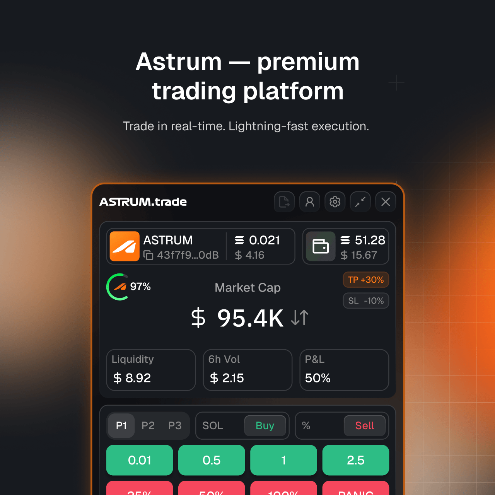
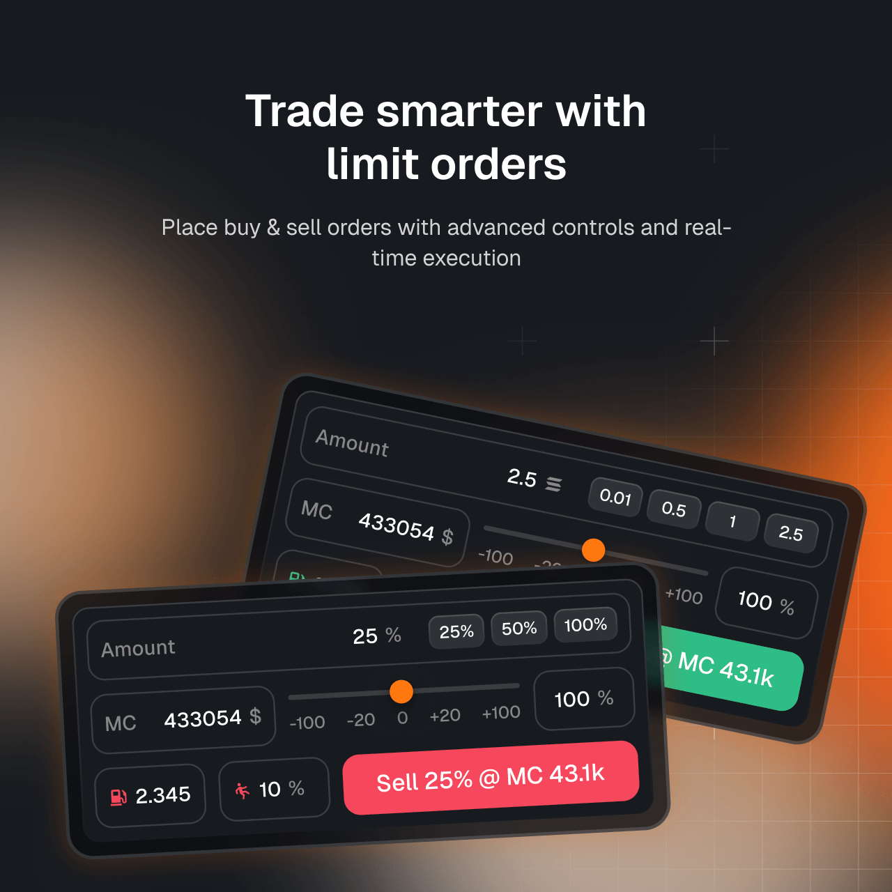
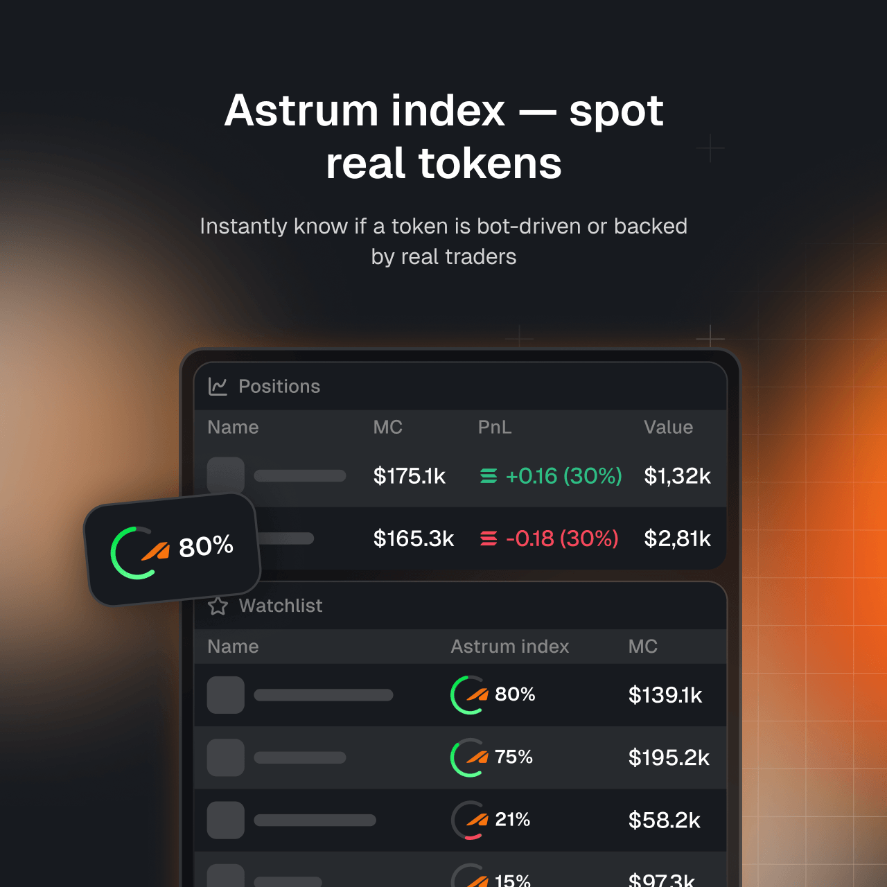
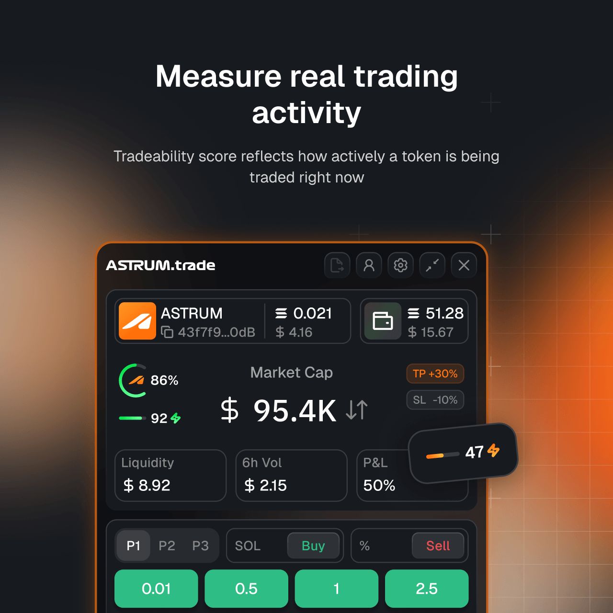
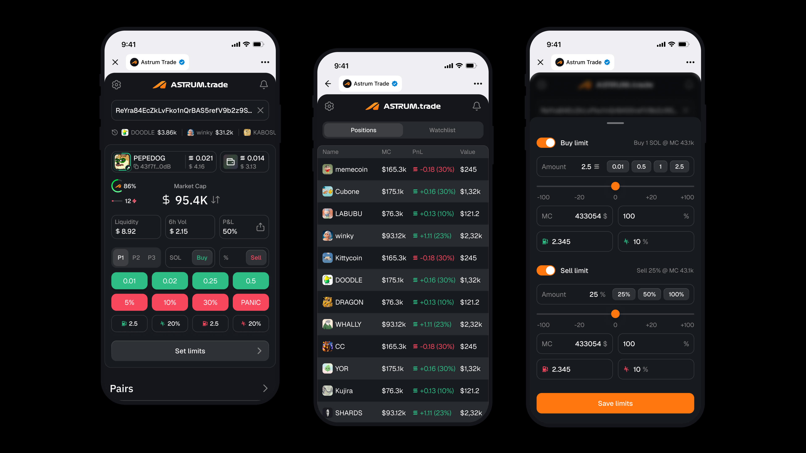

A crypto trading platform — designed as a Chrome extension and Telegram mini-app, with a scalable design system built from the ground up.




Project-based work as a Senior Product Designer for a crypto trading company. I owned the design of a Google Chrome extension and a Telegram mini-app, and built a scalable design system from the ground up to support both surfaces and future product growth.
End-to-end product design across the product surfaces, the system that holds them together, and the marketing that supports them.
Fully designed from scratch — user flows, interaction logic, high-fidelity UI, and final specifications for engineering.
Mobile version of the trading app — adapted complex trading functionality into a clear, intuitive mobile experience.
Built from the ground up to ensure consistency across surfaces and support future product growth.
Landing page for the product, marketing materials, post visuals, and social-network design.
The mini-app needed to deliver the same trading power as the desktop extension, on a screen a fraction of the size and in a context where users tap rather than click. The work was about preserving precision while stripping away anything that didn't serve a mobile flow — building a clear, intuitive trading experience without dumbing it down.

Telegram mini-app — the mobile trading surface, designed to deliver the same trading power as the desktop extension on a screen a fraction of the size.